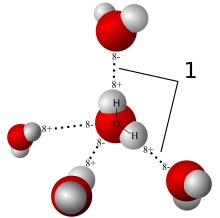

Need of Water
Humans need to drink water to survive.body uses water in many ways.Water is more important for your body's survival than food. You can live without water for approximately one week, but you can survive without food for more than a month.

Chemical and Physical Property
Water is the chemical substance with chemical formula H2O.Water appears in nature in all three common states solid,liquid,and gas. water vapor and clouds in the sky, seawater in the oceans, icebergs in the polar oceans, glaciers in the mountains, fresh and salt water lakes, rivers, and aquifers in the ground.:

Water On Earth
Water covers 71% of the Earth's surface.The oceans contain 96.5% of the Earth's water. The Antarctic ice sheet contains 61% of all fresh water on Earth. Condensed atmospheric water can be seen as clouds.Liquid water is found in bodies of water, such as an ocean, sea, lake, river, stream, canal, pond, or puddle. The majority of water on Earth is sea water. Water is also present in the atmosphere in solid, liquid, and vapor states. It also exists as groundwater in aquifers.
Water Conservation
Water conservation encompasses the policies, strategies and activities made to manage fresh water as a sustainable resource, to protect the water environment, and to meet current and future human demand. Population, household size, and growth and affluence all affect how much water is used. Factors such as climate change have increased pressures on natural water resources especially in manufacturing and agricultural irrigation.
CONTACT US:
www.Water.Org
ph No. : 91-40-23544300, 23545642
Email : info@savewater.Org
Bangalore
feedback on any websites